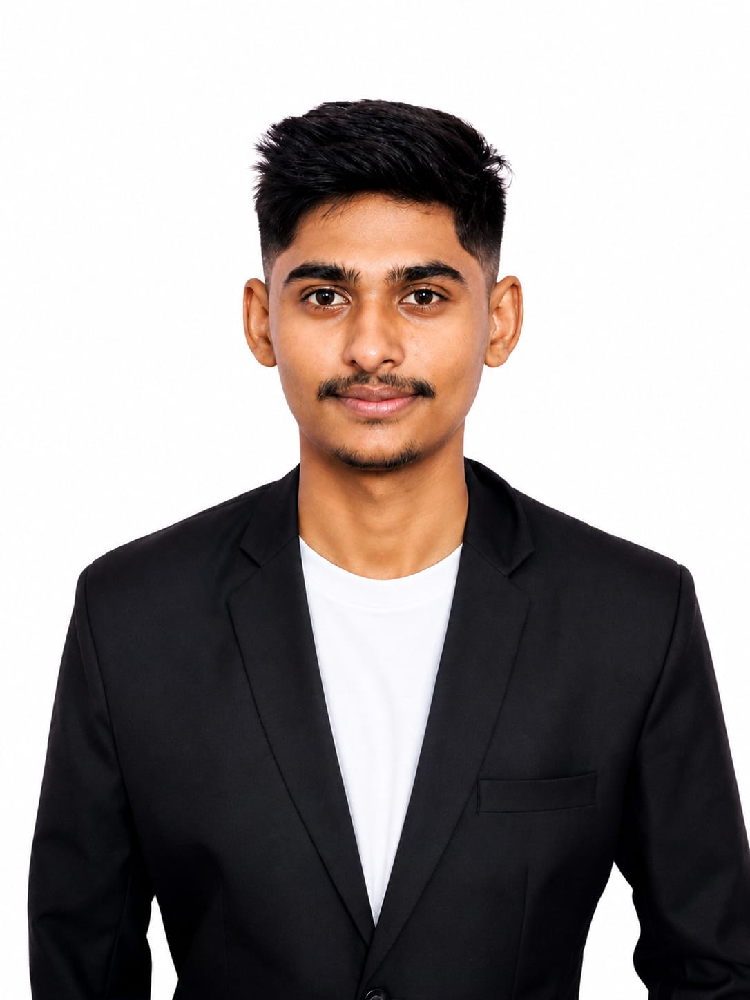

Computer Science & Engineering student combining hands-on cybersecurity work with IoT and computer-vision projects — from a fertilizer-spraying rover to vulnerability assessments on live web apps.

I'm a Computer Science & Engineering student at SVERI's College of Engineering, Pandharpur, building toward two things at once: making systems more secure, and making them smarter about the physical world around them.
That's shown up as a cybersecurity internship where I assessed live websites for vulnerabilities and analyzed phishing patterns, and as a string of IoT and computer-vision projects — an automated fertilizer sprayer, a fish-growth monitor, a soil-moisture irrigation system — built with sensors, microcontrollers and Python.
Alongside the building, I've published a peer-reviewed review paper on deep learning in medical diagnosis, picked up cloud foundations on AWS and Google Cloud, and coordinated national-level department events. I like projects with a physical result, and reports that a non-technical reader can actually act on.
B.Tech, Computer Science & Engineering — SVERI's College of Engineering, Pandharpur (2023–2027)
Dharashiv, Maharashtra, India
English, Marathi, Hindi
Small IoT builds, music, and gaming in whatever time is left
Mostly IoT and computer vision, aimed at agriculture and precision monitoring, plus one hands-on Java build.
A microcontroller-driven rover for precision agriculture. I handled system design and sensor-control integration, plus Bluetooth-based communication for remote operation and real-time monitoring of the spraying mechanism.
An aquaculture monitoring prototype that estimates fish size from video and tracks growth over time, alongside water-quality and temperature sensors. I built the sensor integration and the vision-based size-estimation module.
An automated irrigation system that turns a water pump on or off based on real-time soil-moisture thresholds. I handled sensor integration, threshold calibration and control logic.
A rule-based console chatbot in Core Java that matches keywords to predefined responses, with a modular structure that makes it easy to add new rules without touching the core logic.
A peer-reviewed review article, published as first author alongside co-authors Prasad Khapale and Samarth Kshirsagar, examining how CNNs, RNNs, autoencoders, GANs and vision transformers have shaped automated medical image diagnosis — covering key architectures, clinical applications, common datasets, a generalized deep-learning workflow, and future directions like explainable AI and federated learning.
Presented an agri-tech innovation idea in the Idea Presentation Round, Solapur Region, at Karmayogi Institute of Technology.
Competed in India's biggest AI quiz, organized by CampusCrew on Unstop, among 5,25,000+ students from 48,500+ institutions.
Completed the Computing Foundations track, covering core cloud computing concepts on Google Cloud Platform.
20-hour program covering AWS cloud concepts, core services, security, architecture, pricing and support. Verified via Credly.
10-hour online skilling course on information security fundamentals via Skill India Digital Hub.
Covered leading data science and analytics practices and what a data-driven approach means for a business.
Hands-on session on using generative AI for presentations, data analysis and code debugging.
Coordinator for CHAKRAVYUH 2.0 (national-level CSE event) and the Registration Committee for Spirit 2K25.
Open to software development and cybersecurity roles, internships, and collaborations on IoT or applied ML projects.
Send an email